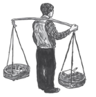

Mevlut, Duttepe ile Kültepe arasındaki gerginliklerin artışını görüyor, kan davasına dönüşmekte olan kavgalara tanık oluyordu ama iki tepe arasında filmlerden çıkma kanlı bir savaşın yaklaşmakta olduğunu sezemiyordu. Çünkü karşılıklı bu iki tepede yaşayanlar arasında, ilk bakışta derin, kanlı bir çatışmaya yol açabilecek farklılıklar yoktu:
• Her iki tepeye de ilk gecekondular 1950’lerin ortasında briket, çamur, teneke karışımıyla yapılmıştı. Bu evlere yoksul Anadolu köylerinden göç edenler yerleşmişti.
• Her iki tepede erkeklerin yarısı gece uyurken mavi çubuklu (çubukların kalınlığı arasında farklılıklar olsa da) pijama giyer, diğer yarısı da hiç pijama giymez, mevsime göre kollu kolsuz eski bir atlet üzerine gömlek, yelek ya da kazak ile idare ederdi.
• Her iki tepede yaşayan kadınların yüzde doksan yedisi, tıpkı analarının köyde yaptığı gibi, sokağa çıkarken başlarını örterlerdi. Hepsi de köyde doğmuşlardı, ama şimdi şehirde “sokak” dedikleri şeyin bambaşka bir şey olduğunu keşfediyorlar ve yazları bile sokağa çıkınca, üzerlerine bol gelen, solmuş koyu lacivert ya da solmuş koyu kahverengi renkte bir pardösü giyiyorlardı.
• Her iki tepede de çoğunluk evlerini hayatlarının sonuna kadar yaşayacakları bir yer olarak değil de, ya zengin olup köye dönmeden önce başlarını sokacakları bir sığınak, ya da şehirdeki apartman dairelerinden birine taşınmak için gerekli fırsatı beklerken kaldıkları yer olarak görüyorlardı.
• Hem Kültepe hem de Duttepe’de yaşayanlar rüyalarında düzenli aralıklarla ve şaşırtıcı benzerliklerle aynı kişileri görüyorlardı:
Erkek çocukları: İlkokuldaki kadın öğretmen
Kız çocukları: Atatürk
Yetişkin erkekler: Hazreti Muhammed
Yetişkin kadınlar: Adı belirsiz, uzun boylu, Batılı bir film yıldızı
Yaşlı erkekler: Süt içen bir melek
Yaşlı kadınlar: İyi haber getiren genç postacı
Bu rüyaları gördükten sonra bir tebliğ aldıkları için gurur duyuyor ve özel bir insan olduklarını anlıyorlar ama rüyalarını nadiren bir başkasıyla paylaşıyorlardı.
• Kültepe’ye ve Duttepe’ye elektrik 1966 yılında, musluk suyu 1970 yılında ve ilk asfalt yol 1973’te tam aynı günlerde gelmişti ve bu yüzden zaman farkından dolayı iki tepe arasında kıskançlık olmamıştı.
• Hem Kültepe’de hem de Duttepe’de, 1970’lerin ortasında her iki evin birinde siyah beyaz görüntüyü net göstermeyen bir televizyon vardı (babalar ve oğullar her iki günde bir kendi yapımları antenleri ayarlamak için uğraşırlardı) ve futbol maçı, Eurovizyon yarışması, Türk filmi gibi önemli yayınlar sırasında televizyonu olmayanlar olanlara misafirliğe gider, her iki tepede de evlerde kalabalığa çayı kadınlar sunardı.
• Her iki tepenin ekmek ihtiyacı Hacı Hamit Vural’ın fırınından sağlanıyordu.
• Her iki tepede de en çok tüketilen beş gıda maddesi, sırasıyla, 1. gramajı düşük ekmek, 2. domates (yazları ve sonbaharda), 3. patates, 4. soğan ve 5. portakaldı.
Ama bazılarına göre bu istatistikler tıpkı Hacı Hamit’in ekmeğinin gramajı gibi yanıltıcıydı. Çünkü toplumların hayatını belirleyen önemli şeyler insanların birbirlerine benzeyen yanlarından değil benzemeyen yanlarından çıkıyordu. Yirmi yılda Duttepe ve Kültepe arasında bazı temel farklılıklar da oluşmuştu:
• Duttepe’nin en gösterişli yerine Hacı Hamit Vural’ın yaptırdığı cami hâkimdi. Sıcak yaz günlerinde yukarıdaki zarif pencerelerden ışık süzülürken içi hoş ve serin olur, insan bu âlemi yarattığı için Allah’a şükretmek ister, içindeki isyancı duygulara böylece hâkim olurdu. Kültepe’nin en manzaralı yerine ise Mevlut’un İstanbul’a ilk geldiği günde gördüğü paslı dev elektrik direği ve üzerindeki kurukafa hâkimdi.
• Duttepelilerin ve Kültepelilerin yüzde doksan dokuzu Ramazan’da resmen oruç tutuyordu. Ama Kültepe’de Ramazan’da gerçekten oruç tutanların oranı yüzde yetmişten fazla değildi. Çünkü Kültepe’de Bingöl, Dersim, Sivas, Erzincan civarından 1960’ların sonunda gelmiş Aleviler de yaşıyordu. Kültepe’nin Alevileri Duttepe’ye camiye namaza da gitmiyorlardı.
• Kültepe’de, Duttepe’de olduğundan çok daha fazla Kürt vardı, ama Kürtler dahil kimse bu kelimeyi uluorta kullanmaktan hoşlanmadığı için bu bilgi her iki tepede de insanların şahsi görüşü olarak şimdilik kafalarının bir köşesinde, tıpkı yalnızca evde konuşulan bir dil gibi uyuklamaktaydı.
• Duttepe’nin girişindeki Memleket Kahvehanesi’ndeki arka masaların birinde kendilerine milliyetçi-ülkücü diyen gençler oturmaya başlamıştı. Ülküleri, komünist Rus ve Çin devletlerinin esareti altındaki Orta Asya Türklerini (Semerkant, Taşkent, Buhara, Sincan) özgürleştirmekti. Bunun için her şeyi göze almaya, hatta öldürmeye bile hazırdılar.
Kültepe’nin girişindeki Yurt Kahvehanesi’ndeki arka masaların birinde kendilerine solcu-sosyalist diyen gençler oturmaya başlamıştı. İdealleri Rusya’daki ya da Çin’deki gibi özgür bir toplum yaratmaktı. Bunun için her şeyi göze almaya, hatta ölmeye bile hazırdılar.
Lisenin ikinci sınıfını da, bir yıl çaktıktan sonra zorlukla bitirince, Mevlut dersleri izlemeyi artık bütünüyle bırakmıştı. Sınav günleri bile gitmiyordu okula. Babası da durumun farkındaydı. Mevlut da “Yarın sınav var!” deyip çalışıyormuş gibi bile yapmıyordu artık.
Bir akşam canı sigara istiyordu. Bir anda evden çıkıp Ferhat’a gitti. Arka bahçede yanında bir başka genç bir kovaya bir şeyler döküyor, karıştırıyordu. “Bu sudkostik,” dedi Ferhat, “içine biraz un atınca yapışkan olur. Afişe çıkıyoruz. Sen de gel istersen.” Öteki gence döndü. “Mevlut iyi çocuktur, bizdendir. Ali-Mevlut.”
Mevlut uzun boylu Ali ile el sıkıştı. Ali bir sigara tuttu, Bafra’ydı. Mevlut onlara katıldı. Bu tehlikeli işi mert olduğu için yaptığına inanıyordu.
Karanlık ara sokaklardan, hiç kimseye görünmeden ağır ağır ilerlediler. Ferhat uygun bir yer görünce hemen duruyor, elindeki kovayı yere koyup fırçayla asitli yapışkan suyu düzgünce bir zemine, bir duvara sürüyordu. Aynı anda Ali kolunun altında taşıdığı afişlerden bir tanesini çekip ıslak zemin üzerine hünerle ve hızla açarak yapıştırıyordu. Ali’nin eli afişi duvara yayarak yapıştırırken Ferhat’ın elindeki fırça afişin bir de öteki yüzü üzerinde, özellikle kenarlarda hızla geziniyordu.
Mevlut gözcüydü. Duttepe’nin aşağı mahallelerinde televizyon misafirliğinden gülüşe konuşa dönen bir anne baba ve “Ben uyumayacağım!” diyen bir erkek çocuk (afişçilere neredeyse çarpıyorlardı, ama görmediler onları) geçerken hepsi nefeslerini tuttular.
Afişe çıkmak, gece satıcılık yapmaya benziyordu. Evde bazı sıvıları, tozları büyücü gibi birbirine karıştırıp karanlık sokaklara çıkıyordun. Ama satıcı gürültü eder, bağırıp zilini çalarken afişçi gece gibi sessiz olmalıydı.
Aşağıdaki kahvelerin, çarşının, Hacı Hamit’in fırınının önünden geçmemek için yolu uzattılar. Duttepe’ye varınca Ferhat fısıldayarak konuşmaya başladı ve Mevlut düşman arazisine sızan bir gerilla gibi hissetti kendini. Gözcülük görevini Ferhat aldı, Mevlut da kovayı taşıyıp fırçayla duvara yapıştırıcı sürüyordu. Yağmur başladı, sokaklar tenhalaştı, tuhaf bir ölüm kokusu aldı Mevlut.
Uzaklardan bir yerden silah sesleri, tepeler arasında yankılandı. Üçü de durup birbirlerine baktılar. Mevlut duvarlara yapıştırdıkları afişin üzerinde yazılanları ilk defa, konuyu ciddiyetle düşünerek okudu: HÜSEYİN ALKAN’IN KATİLLERİNDEN HESAP SORULACAK TMLKHP-MLC. Altında da orak çekiçler ve kızıl bayraklardan yapılmış bir çeşit alt kenar süslemesi vardı. Hüseyin Alkan’ın kim olduğunu bilmiyordu Mevlut, ama onun da Ferhat ve Ali gibi Alevi olduğunu, onların kendilerine solcu denmesini istediklerini anlıyor ve kendi de Alevi olmadığı için hem suçluluk hem de bir üstünlük duyuyordu.
Yağmur hızlanınca sokaklar daha sessizleşti, köpekler havlamayı kesti. Bir saçağın altına sığındıklarında Ferhat fısıldayarak anlattı: Hüseyin Alkan, Duttepeli ülkücüler tarafından, kahveden dönerken iki hafta önce vurulmuştu.
Amcasının sokağına girdiler. Mevlut İstanbul’a geldiğinden beri yüzlerce kere girdiği, Süleyman, Korkut ve teyzesiyle mutlu saatler geçirdiği eve bir an, afiş asan öfkeli solcu gözüyle bakınca babasının öfkesine hak verdi. Birlikte yaptıkları bu evi, amcası ve oğulları, Aktaşlar hep birlikte ellerinden göstere göstere almışlardı.
Kimse yoktu ortalıklarda. Mevlut evin arka duvarının en görünür yerine, fırçayla bolca yapışkan sürdü. Ali iki tane afiş yapıştırdı. Bahçedeki köpek Mevlut’un kokusunu alıp tanıdığı için kuyruk sallıyor, hiç ses çıkarmıyordu. Arka ve yan duvarlara da afiş yapıştırdılar.
“Yeter, görecekler,” diye fısıldadı Ferhat. Mevlut’un öfkesinden korkmuştu. Yasak bir şey yapmanın verdiği özgürlük duygusu Mevlut’un başını döndürmüştü. Sudkostiğin yoğun asiti parmaklarının ucunu, elinin üstünü yakıyor, yağmurda ıslanıyor ama aldırmıyordu. Boş sokaklarda afiş asa asa tepenin yukarlarına çıktılar.
Hacı Hamit Vural Camii’nin meydana bakan duvarında çok iri harflerle “Afiş asmak yasaktır” yazıyordu. Yazının üzerine sabun deterjan reklamları, milliyetçi, ülkücü derneklerin “Tanrı Türk’ü Korusun” diyen afişleri ve Kuran kursu duyuruları yapıştırılmıştı. Mevlut bütün bu kâğıtların üzerine zevkle yapışkan sürdü ve kısa sürede bütün duvarı kendi afişleriyle donattılar. Avluda da kimsecikler yoktu, avlu duvarını da içeriden afişlediler.
Bir gürültü işittiler. Rüzgârda vuran bir kapıydı ama ilk anda silah sesi sanıp koştular. Mevlut elindeki kovadan üstüne başına sıvı sürüldüğünü hissediyor ama gene de koşuyordu. Duttepe’den uzaklaştılar ama korkularından utandıkları için diğer tepelerde, ellerindeki afişler bitene kadar çalıştılar. Gecenin sonunda yer yer kanayan elleri asitten ateş gibi yanıyordu.
Süleyman. Ağabeyimin dediği gibi: Eceli gelen Alevi cami duvarına komünist afişi yapıştırırmış. Aslında Aleviler kimseye zararı olmayan sessiz, çalışkan insanlardır ama Kültepe’deki bazı maceraperestler komünist parasıyla aramıza fitne sokmak istiyorlar. Bu Marksist-Leninistlerin aklında ilk Vurallar’ın Rize’den getirdiği bekâr hemşehrilerini komünistlik ve sendika davasına kazandırmak vardı. Tabii Rizeli bekâr işçiler İstanbul’a onlar gibi akılsızlık etmeye değil para kazanmaya geliyorlar; Sibirya ve Mançurya’daki çalışma kamplarında esir olmaya niyetleri yok. Böylece uyanık Rizeliler bu Alevi komünistlerini püskürttüler. Vurallar da Kültepeli komünist-Alevileri polise bildirdi. Kahvelere sivil polisler ve MİT elemanları gelip sigara tüttürmeye (bütün memurlar gibi Yeni Harman içiyorlardı) ve televizyona bakmaya başladılar. İşin arkasında, Alevi Kürtlerin Duttepe’de yıllar önce çevirdikleri eski arsalara Vurallar’ın sahip çıkıp inşaat yapması var. Duttepe’deki o eski arsalar, Kültepe’de üzerine ev diktikleri arsalar onlarınmış! Öyle mi? Tapun yoksa kardeşim, muhtarın dediği olur, tamam mı? Muhtar Rizeli Rıza da bizden yana. Zaten sen haklı olsan için ferah olur, için ferah olsa gece yarısı bizim sokaklarımıza girip komünist propaganda afişleri, cami duvarına da Allahsızlık ilanı asmazdın herhalde.
Korkut. On iki yıl önce ben köyden babamın yanına geldiğimde, Duttepe’nin yarısı, diğer tepelerin neredeyse tamamı boştu. O zaman yalnız bizler gibi evsiz barksızlar, İstanbul’da yatacak bir yeri bile olmayanlar değil, şehrin merkezinde iş güç sahibi olanlar da bizim bu tepelerdeki arsaları yağmaladılar. Anayoldaki ilaç ve ampul fabrikalarında, her gün yenisi açılan imalathanelerde ucuza çalışacak işçilere yatıp kalacakları evlerini yapacak bedava arsa gerektiği için, devletin boş arsalarını her önüne gelenin sahiplenmesine kimse ses çıkarmadı. Böylece çevirdiğin arsanın senin olduğu haberi hemen yayıldı ve şehrin merkezinde memurluk, öğretmenlik yapan, hatta dükkân sahibi olan pek çok uyanık bizim tepelerde, bir gün para eder diye gidip arsa çevirdi. Resmi kâğıdın tapun yoksa şahsi arsana nasıl sahip olacaksın? Ya devletin görmezlikten geldiği gecelerin birinde üstüne bir ev yapıp içine girip orada yaşayacaksın, ya da elinde silah başında bekleyeceksin. Ya da arsanı beklesin diye eli silahlı bazı adamlara para vereceksin. O da yetmez, eli silahlı adamla dost olacak, yediğini içtiğini paylaşıp arkadaşlık edeceksin ki senin yerini canıgönülden korusun, bir gün tapu verilirken kimse “Memur bey, aslında burası benimdir, şahitlerim var,” demesin. Bu işi en iyi Rizeli Hacı Hamit Vural büyüğümüz yaptı. Köyden getirdiği bekârları hem inşaatlarında, fırınlarında çalıştırıp onlara ekmek verdi (aslında ekmekleri de onlar pişiriyordu), hem de onları asker gibi kullanıp arsalarını, inşaatlarını korudu. Aslında, Rize’nin köyünden gelmiş Rızaları şehirde hemen öyle asker gibi kullanmak kolay değildir. Köyden gelen arkadaşları eğitmek için derneğe ve Altaylı Karate ve Tekvando Salonu’na hemen bedava üye yaptık ki Türklük tarifi nedir, Orta Asya neresidir, Bruce Lee kimdir, lacivert kuşağın anlamı nedir öğrensinler. Fırında, inşaatlarda çalışıp helak olan bu çocuklar Beyoğlu pavyonlarında orospulara, solcu derneklerinde de Moskovacılara yem olmasın diye uygun aile filmlerini Mecidiyeköy’deki bizim derneğe getirip gösterdik. Davaya inanıp duvardaki Orta Asyalı esir Türklerin haritasına bakıp gözleri sulanan, kumaşı sağlam çocukları derneğe ben üye yazıyordum. Bu gayretlerimiz sonucu Mecidiyeköy’deki ülkücü yapılanmamız, milliyetçi ordumuz hem askeri olarak hem de entelektüel olarak büyüyüp güçlendi ve haliyle öteki tepelere de yayılmaya başladı. Komünistler bizim tepede hâkimiyeti kaybettiklerini çok geç anladılar. İlk anlayan, Mevlut’un arkadaşlık etmekten hoşlandığı o kurnaz Ferhat’ın babasıdır. Bu hırslı ve paragöz adam çevirdiği arsaları sahiplenebilmek için kendine burada hemen bir ev yaptı ve Karaköy’den ailecek buraya taşındılar. Sonra Bingöllü diğer Kürt-Alevi yoldaşlarını köyden yanına çağırdı ki Kültepe’deki arsalarını tutabilsinler. Öldürülen Hüseyin Alkan bunların köyündendir, ama kim öldürdü haberim yok. Sorun çıkaran bir komünist öldürülünce önce arkadaşları yürüyüş yapar, slogan atar, afişe çıkar ve cenazeden sonra sağa sola saldırıp biraz cam çerçeve indirirler. (Kırıp dökme ihtiyaçlarını tatmin ettiği için bunlar cenazeleri aslında çok severler.) Ama sonra sıranın kendilerine yaklaştığını anlayıp akıllarını başlarına toplar, ya sıvışır ya da komünistlikten istifa ederler. Böyle böyle özgürce düşüncelerini yayarsın.
Ferhat. Şehidimiz Hüseyin Ağbi çok iyi bir insandı. Onu köyden getirip Kültepe’ye, bizim yaptığımız evlerden birine babam yerleştirdi. Gece yarısı onu ensesinden vuran da tabii Vurallar’ın beslediği adamlardan biridir. Üstelik polis soruşturma sonunda bizleri suçladı. Vurallar’ın desteğindeki faşoların yakında Kültepe’ye saldıracaklarını, bizleri de tek tek temizleyeceklerini biliyorum da, ne Mevlut’a (gider Vurallar’a saflıkla anlatır diye) ne de bizimkilere anlatabiliyorum. Solcu Alevi gençlerin yarısı Moskova taraftarı, diğer yarısı da Maocu olduğu ve bu görüş ayrılıkları yüzünden birbirlerine tekme, tokat, yumruk sık sık giriştikleri için onlara Kültepe’yi kaybedeceklerini söylememin bir faydası da olmaz. Aslında ben inanmam gereken davaya da ne yazık ki inanmıyorum. İleride ticaret hayatına atılıp bir iş kurmak var aklımda. Bir de üniversiteyi kazanmayı çok istiyorum. Ama Alevilerin çoğu gibi solcuyum, laik biriyim ve bizleri öldüren ülkücülerden ve kontrgerillacılardan da hoşlanmıyorum hiç. Birimiz öldürülünce de, sonunda kaybedeceğimizi bile bile, ben de cenazelere gidiyorum, slogan atıp yumruğumu sallıyorum. Babam bu tehlikelerin farkında olduğu için “Acaba evi satıp Kültepe’den gitsek mi?” diyor, ama buraya herkesi o getirdiği için onu da yapamıyor.
Korkut. Bizim evin duvarına bu kadar çok afiş yapıştırılmasından, bunu yapanın örgüt değil, bizi tanıyan biri olduğunu anladım. İki gün sonra Mustafa Amca bize gelip Mevlut’un hiç evde durmadığını, hele geceleri kaybolduğunu, okula da doğru dürüst gitmediğini söyleyince iyice pirelendim. Mustafa Amca birlikte serserilik mi ediyorlar diye Süleyman’ın ağzını arıyordu. Ama ben Ferhat denen itin Mevlut’u kötü yola çektiğini seziyordum. Süleyman’a Mevlut’u iki akşam sonra kandırıp bize akşam yemeğine tavuk yemeye çağırmasını söyledim.
Safiye Teyze. Benim oğlanlar, özellikle Süleyman, Mevlut’la hem arkadaşlık etmek ister, hem de ona eziyet etmeden duramazlar. Mevlut’un babası, ne doğru dürüst para biriktirip köydeki evini adam edebildi, ne de Kültepe’deki tek odalık evi büyütebildi. Bazan Kültepe’ye bir gideyim, baba oğulun yıllardır bekâr hayatı yaşadıkları o ahır gibi eve bir kadın eli değsin diyorum ama içim parçalanır diye korkuyorum da. Babası inat edip ailesini köyde bırakınca yavrum Mevludum ilkokuldan sonra bütün hayatını İstanbul’da öksüz gibi tek başına geçirdi. İstanbul’a ilk geldiği yıllarda, ana özlemine kapılınca bana gelirdi. Onu kucağıma alır, sevip okşar, öper, aman ne akıllısın sen derdim. Korkut ile Süleyman kıskanırlardı, ama aldırmazdım. Şimdi yüzünde gene aynı masum ifade, alıp kucağıma öpeceğim, biliyorum o da istiyor ama artık boyu katır gibi oldu, yüzü sivilcelerle doldu, Korkut ile Süleyman’dan utanıyor. Derslerini de artık sormuyorum çünkü halinden kafasında her şeyin birbirine karıştığını görüyorum. Eve gelir gelmez çekip mutfağa götürdüm, Korkut ile Süleyman görmeden yanağından öptüm, “Maşallah sırık gibi olmuşsun, ama utanma boyundan, dik dur bakayım,” dedim. “Teyze, boyumdan değil, yoğurtçu sırığından bu yaşta kambur oldum, zaten ben bırakacağım,” diyordu... Yemekte de tavuğu öyle bir yiyordu ki kalbim parçalandı. Korkut komünistlerin iyi niyetli safları tatlı dille kendi yanlarına çekmek isteyeceklerini anlatırken Mevlut susuyordu. “Bana bakın çakallar, ne diye korkutuyorsunuz zavallı öksüzü,” dedim Korkut ile Süleyman’a mutfakta.
“Anne, biz ondan şüpheleniyoruz, sen karışma!” dedi Korkut.
“Hadi oradan, bulmuşsunuz masumu... Nesinden şüphelenir insan Mevlutçuğumun. Bu kötü düşmanlarla hiç ilgisi yoktur onun.”
“Maocularla işbirliği yapmadığını bize kanıtlamak için, Mevlut bizimle bu akşam yazı yazmaya çıkacak,” dedi Korkut masaya dönünce. “Öyle mi Mevlut?”
Gene üç kişiydiler, gene birinin elinde kocaman bir kova vardı, ama yapıştırıcıyla değil, siyah boyayla doluydu içi. Uygun bir noktaya geldiklerinde, Korkut gözünü kestirdiği yere elindeki fırçayla bir slogan yazmaya başlıyordu. Mevlut ona elindeki kovayla boya tutarken bir yandan da duvara yazılan sloganın ne olduğunu tahmin etmeye çalışırdı. TANRI TÜRK’Ü KORUSUN Mevlut’un da en çok hoşuna giden ve hemen öğrendiği bir dilekti. Şehrin pek çok yerinde de görmüştü. Tarih derslerinde okuduklarını, âlemdeki Türkler ailesinin bir üyesi olduğunu Mevlut’a hatırlattığı ve iyi niyetli bir temenni olduğu için hoşuna gidiyordu. Oysa başka bazı sloganların tehditkâr bir havası vardı. Korkut DUTTEPE KOMÜNİSTE MEZAR OLACAK diye yazarken, Mevlut burada kastedilenin Ferhat ve arkadaşları olduğunu seziyor, bu ifadelerin kabadayılıktan öteye geçmeyeceğini umuyordu.
Gözcülük yapan Süleyman’ın bir sözünden (“Makina ağbimde”) yanlarında silah olduğunu da anladı Mevlut. Duvardaki yer büyükse Korkut, komünist kelimesinden önce bazan ALLAHSIZ da yazıyordu. Çoğu zaman kelime ve harf sayısını iyi ayarlayamadığı için bazı harfleri küçük ve çarpık çurpuk yazıyor, Mevlut da kafayı her şeyden çok bu düzensizliğe takıyordu. (Arabasının vitrinine veya simit kutusuna sattığı malın adını çarpık çurpuk harflerle yazan satıcının hiçbir geleceği olmadığına inanırdı Mevlut.) Bir keresinde kendini tutamadı, Korkut’u bir K’yı çok büyük yazdığı için uyardı. “Al sen yaz da görelim!” diyerek Korkut fırçayı Mevlut’un eline tutuşturdu. Mevlut gecenin içine doğru ilerledikçe sünnetçi ilanlarının, “Çöp döken eşek” diyen duvarların ve dört gün önce yapıştırdığı Maocu afişlerin üzerine “Tanrı Türk’ü Korusun!” diye yazdı.
Karanlık ve yoğun bir ormanın içine girer gibi gecekondular, duvarlar, bahçeler, dükkânlar ve şüpheci köpekler arasına girdiler. Mevlut her “Tanrı Türk’ü korusun” diye yazışında hem gecenin derinliğini hissediyor hem de yazının aslında sınırsız gecenin içine konmuş bir işaret, bir imza olduğunu ve bu imzanın bütün mahalleyi değiştirdiğini hissediyordu. Yalnız Duttepe’de değil, Kültepe ve diğer tepelerde, geceleri Ferhat ve Süleyman ile aylaklık ederken gözünden kaçan pek çok şeyi o gece fark etti: Mahalle çeşmelerinin her köşesi sloganlar ve afişlerle kaplıydı; kahvelerin önünde sigara içerek bekleyen kişiler aslında tabancalı nöbetçilerdi; aileler, insanlar geceleri sokaklardan kaçıyor ve sanki kendi iç âlemlerine sığınıyorlardı; eski masallar gibi saf ve sınırsız bu gecede Türk olmak yoksul olmaktan çok daha iyi bir duyguydu.